Example 1: A simple LED strip (3 meters with 30 LEDs/meter)
Problem: You want to create a simple LED strip with a length of 3 meters and 30 LEDs/meter. The power supply should be placed near the LED strip at a distance of approx. 50 cm. The full brightness of the strip should be used. For cost reasons, you decide on a simple WS2812B 5V type LED strip.
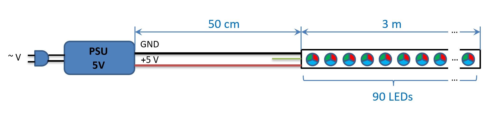
Solution: With a length of 3 meters and 30 LEDs/m, a total of 90 LEDs have to be controlled. You enter the data into the calculator and get the result:
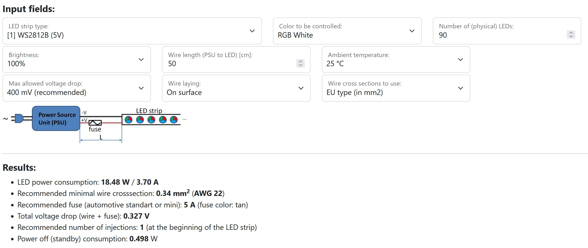
The LED power consumption is a maximum of 3.70 A. In addition, approximately 0.5 A will typically be necessary for the WLED controller. The power supply must therefore be able to deliver at least 4.2 A. Assume that you use a 10 A (50 watt) power supply, which you purchased with reserve for possible later extensions. In this case it is essential to use a fuse. The fuse suggested by the calculator has a nominal value of 5 A. The cable cross section must be at least 0.34 mm2. The calculator also says that a power feed point at the beginning of the LED strip is sufficient.
The fuse can be integrated in a separate fuse holder:
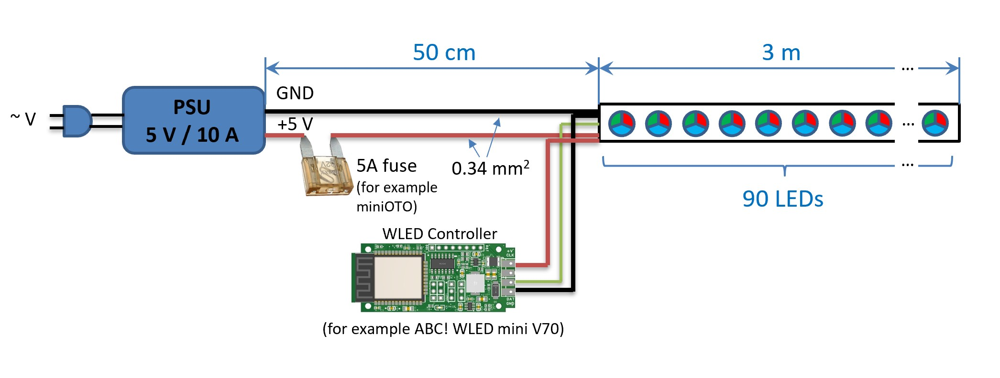
Or if, for example, a controller with a fuse option is used (such as ABC !WLED Controller Board V31), the fuse can be used directly in the controller.

As a supplement, it shows what changes if the distance between the power supply and the LED strip is increased to 1.50 m. In results only the recommended cable cross section changes from 0.34 mm2 to 1 mm2. This change is necessary to keep the voltage drop across the supply line low:
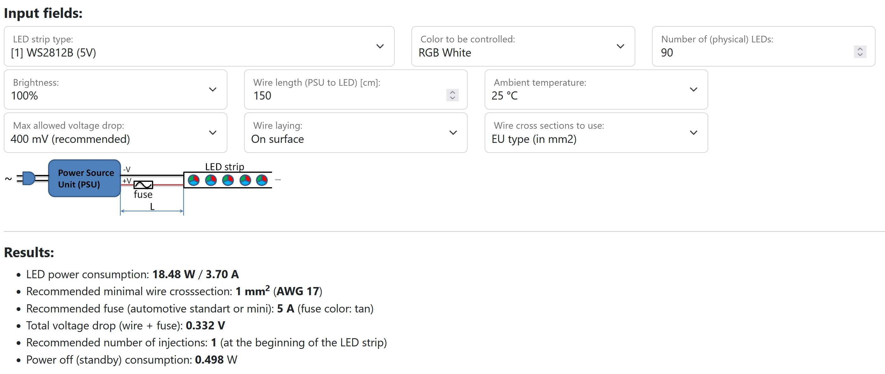
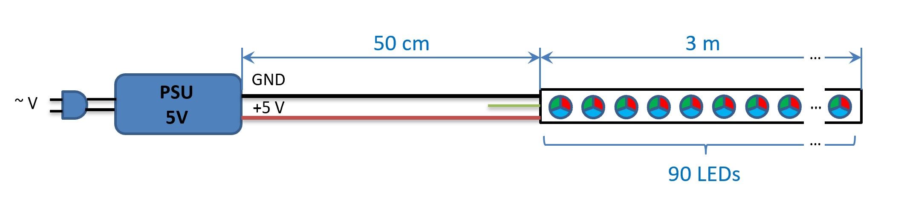
Solution: With a length of 3 meters and 30 LEDs/m, a total of 90 LEDs have to be controlled. You enter the data into the calculator and get the result:
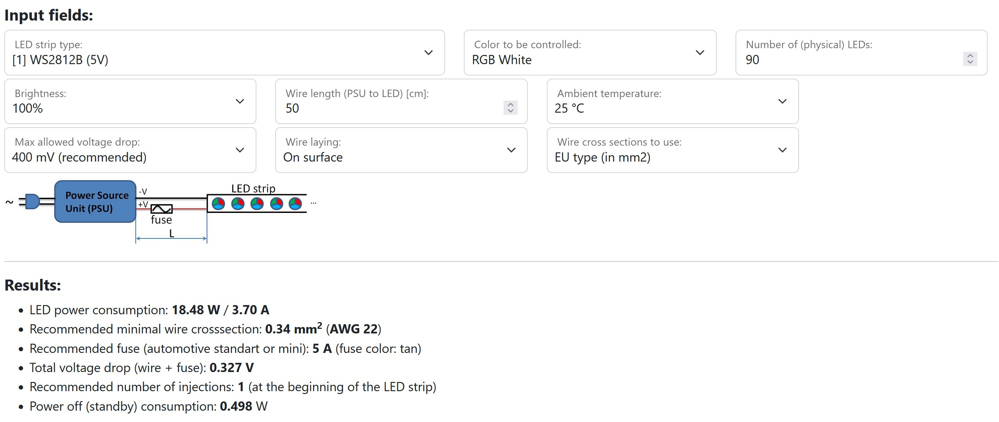
The LED power consumption is a maximum of 3.70 A. In addition, approximately 0.5 A will typically be necessary for the WLED controller. The power supply must therefore be able to deliver at least 4.2 A. Assume that you use a 10 A (50 watt) power supply, which you purchased with reserve for possible later extensions. In this case it is essential to use a fuse. The fuse suggested by the calculator has a nominal value of 5 A. The cable cross section must be at least 0.34 mm2. The calculator also says that a power feed point at the beginning of the LED strip is sufficient.
The fuse can be integrated in a separate fuse holder:
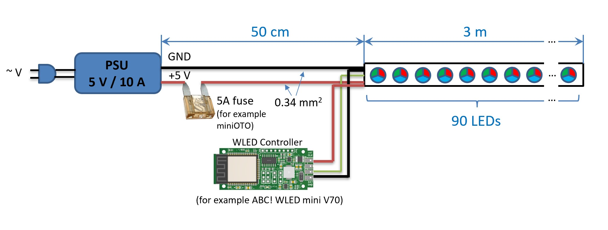
Or if, for example, a controller with a fuse option is used (such as ABC !WLED Controller Board V31), the fuse can be used directly in the controller.
As a supplement, it shows what changes if the distance between the power supply and the LED strip is increased to 1.50 m. In results only the recommended cable cross section changes from 0.34 mm2 to 1 mm2. This change is necessary to keep the voltage drop across the supply line low:
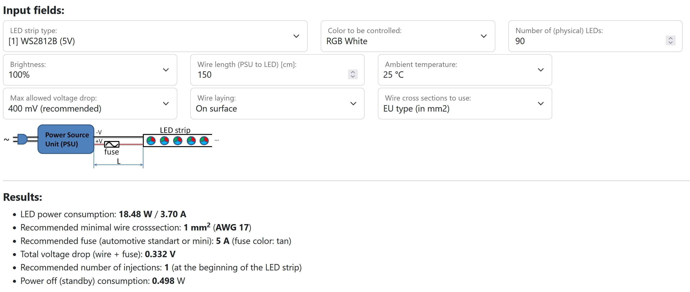
Example 2: A 75 inch TV should have Ambilight. A total of 152 LEDs of type SK6812RGBNW
Problem: You would like to equip your 75 inch TV with Ambilight (for details see, for example, the Hyperion projekt). You want to control the LEDs with WLED. For better color rendering, choose the LED type SK6812NW. Like many others, you decide for yourself that 30 LEDs/meter are sufficient. You want to place the power supply and the WLED controller under (or behind) the television (approx. 50 cm away from LEDs).
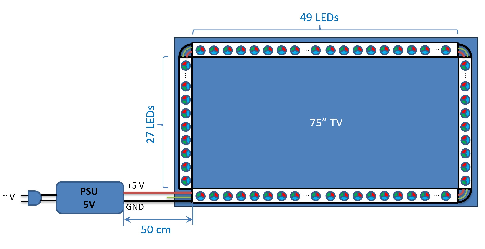
Solution: A 75 inch TV has a side length of approx. 167cm x 94cm. With 30 LEDs/meter you can place 49 LEDs on a long side and 27 LEDs on a short side. In total there are 49*2+27*2 = 152 LEDs. You enter the data into the calculator, don't forget to select “RGB White + White” and you get the result:

It is noticeable that the calculator recommends 2 power injections to enable full brightness with “RGB White+White”: at the beginning and at the end of the strip. The results regarding recommended cable cross-section and fuse protection can only be applied to the section between the power supply and the power distribution. To do the design of the power distribution, we click on “High current: calculate with power injections:”. Here we specify that from the power distribution to the LED strip at the beginning and at the end there is only a short piece of wire (20 cm):
Each power injection can therefore be implemented with 0.34 mm2 and must be protected with a 5 A fuse. The result is shown in the picture:
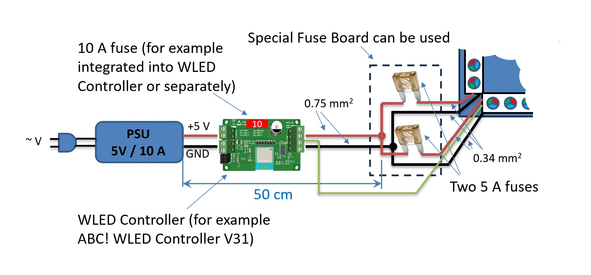
The fuses can be integrated into the cable or you can use a special fuse board such as this one.
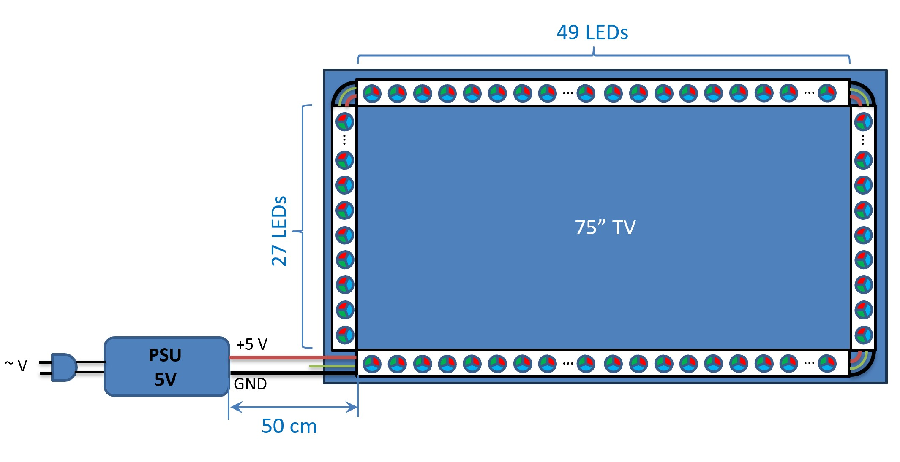
Solution: A 75 inch TV has a side length of approx. 167cm x 94cm. With 30 LEDs/meter you can place 49 LEDs on a long side and 27 LEDs on a short side. In total there are 49*2+27*2 = 152 LEDs. You enter the data into the calculator, don't forget to select “RGB White + White” and you get the result:
It is noticeable that the calculator recommends 2 power injections to enable full brightness with “RGB White+White”: at the beginning and at the end of the strip. The results regarding recommended cable cross-section and fuse protection can only be applied to the section between the power supply and the power distribution. To do the design of the power distribution, we click on “High current: calculate with power injections:”. Here we specify that from the power distribution to the LED strip at the beginning and at the end there is only a short piece of wire (20 cm):
Each power injection can therefore be implemented with 0.34 mm2 and must be protected with a 5 A fuse. The result is shown in the picture:
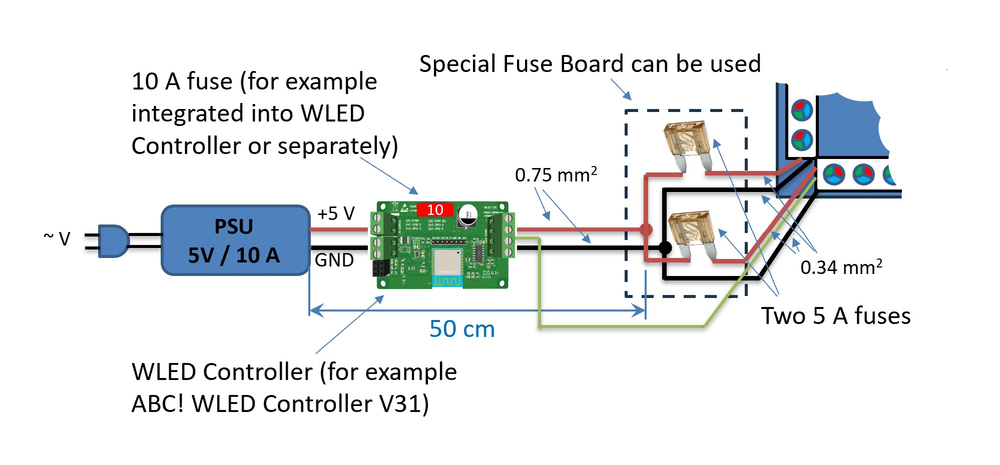
The fuses can be integrated into the cable or you can use a special fuse board such as this one.
Example 3: 18 meter WS28xx RGB FCOB LED strip 24 V (720 LEDs/m), two PSU
Problem: In a room, RGB FCOB LED strips should be used under the ceiling as ambient lighting. The room size is 5m x 4m. A WS28xx FCOB-LED with 720 LEDs/m should be used. The power supply must be placed in the room just a little above the floor, i.e. at a distance of approx. 2 m from the LED strip.
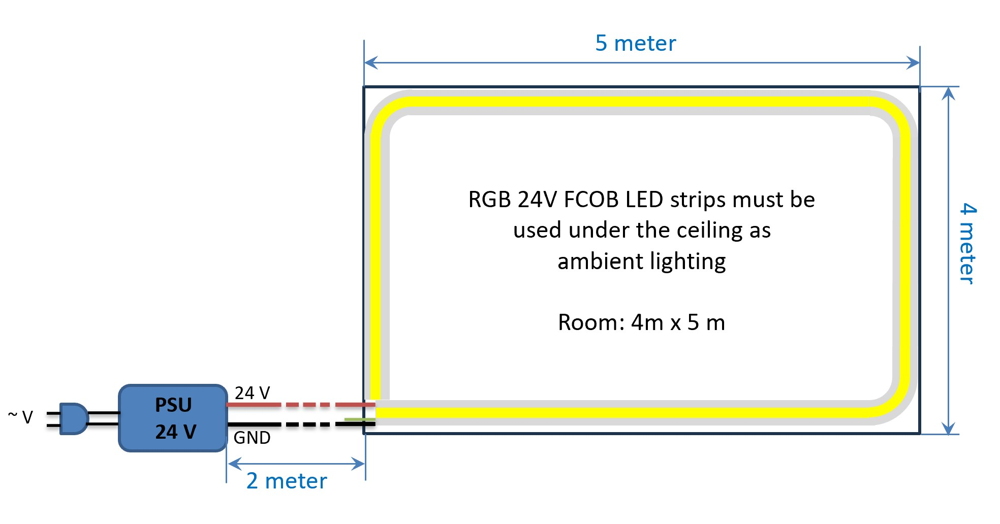
Solution: A total of (5+4)*2 = 18 meters of LED strips must be used. For RGB FCOB strips, the specification 720 LEDs/m means that there are 240 LEDs of each color (R, G, B) per meter. Therefore, as with LED strips with individual LEDs, we count that there are 240 LEDs per meter. At 18 meters there are 18*240 = 4320 "RGB" LEDs. We enter the data into the calculator. At 24 V the voltage drop can be higher, we choose 700 mV:
The result shows that you need a total of almost 18 A and you have to implement 3 power injections: at the beginning, at the end and in the middle. In the middle in this case means in the opposite corner of the room. If you wanted to implement the whole thing with a single power supply, the length of the power lines from the power supply to the respective injection points would be: 2m, 11m, 2m. We use this to calculate the power injections:
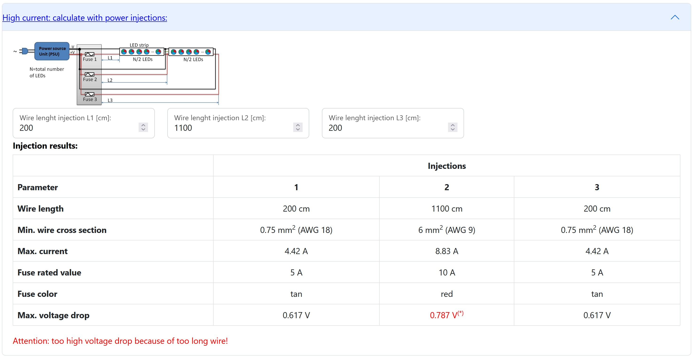
It is noticeable that a very thick cable is needed for the middle injection in order to keep the voltage drop small. But it still exceeds 700mV. We therefore decide to place another power supply in the opposite corner of the room. This means that each power supply only supplies half of the LED strip, 4.5 meters in each direction:

This means that each power supply supplies 9 meters of LED strip: 2160 LEDs must be entered into the calculator for each power supply:
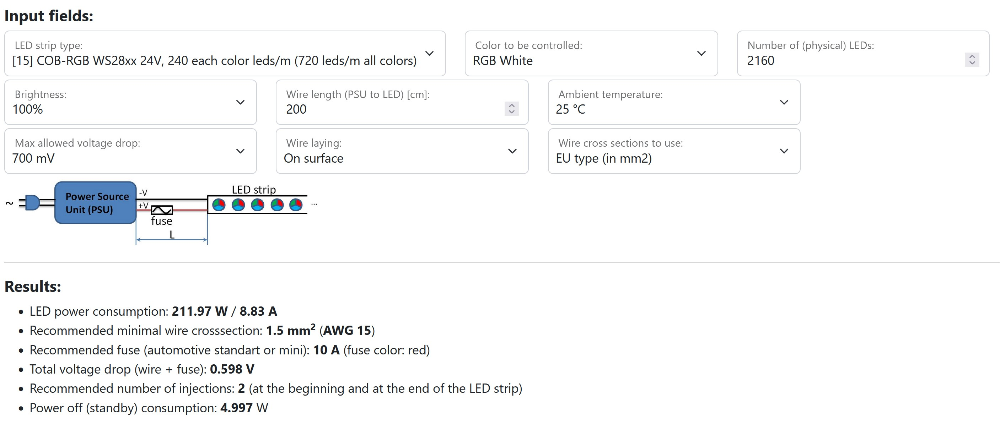
The cable from the power supply to the LED strip must have cross section 1.5 mm2 and be protected with a 10 A fuse. The calculator suggests two power injections, once at the beginning and once at the end of the LED strip. However, our situation is different in that we supply two pieces of LED strips from one power supply, but the power consumption is the same. Therefore, you can use directly the specifications from the calculator regarding injections:
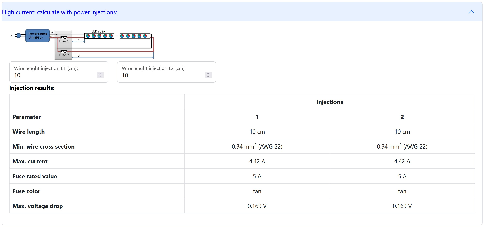
So each power injection is implemented short, must be at least 0.34 mm2 and is protected with a 5 A fuse:
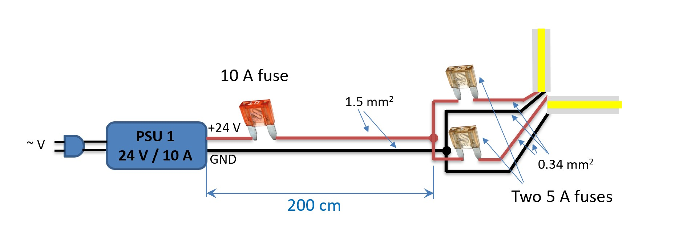
Four issues can be additionally discussed:
The whole thing can then be implemented, for example, with a controller, two 24 V relay boards and 4x 5A fuses from MyHome-Control as follows:
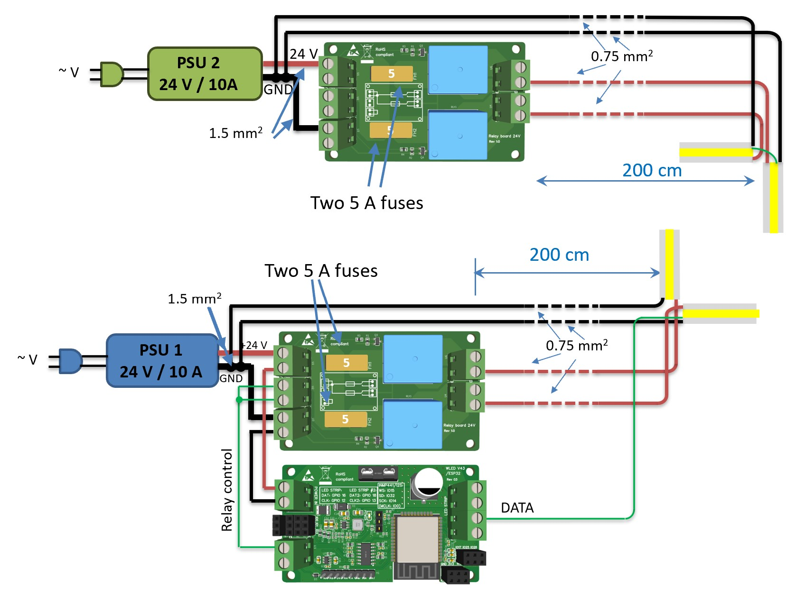
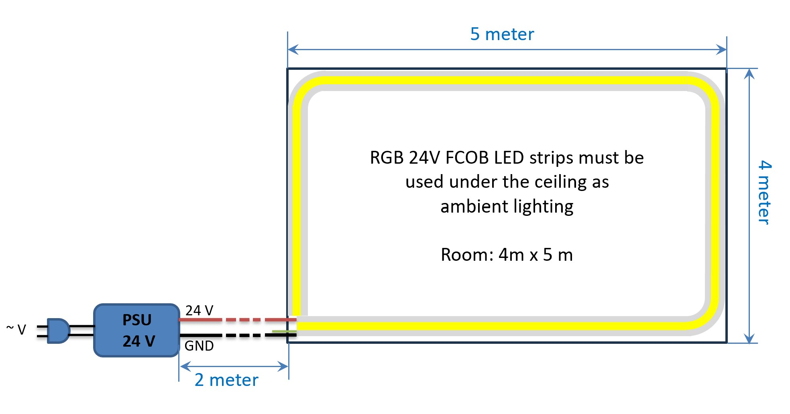
Solution: A total of (5+4)*2 = 18 meters of LED strips must be used. For RGB FCOB strips, the specification 720 LEDs/m means that there are 240 LEDs of each color (R, G, B) per meter. Therefore, as with LED strips with individual LEDs, we count that there are 240 LEDs per meter. At 18 meters there are 18*240 = 4320 "RGB" LEDs. We enter the data into the calculator. At 24 V the voltage drop can be higher, we choose 700 mV:
The result shows that you need a total of almost 18 A and you have to implement 3 power injections: at the beginning, at the end and in the middle. In the middle in this case means in the opposite corner of the room. If you wanted to implement the whole thing with a single power supply, the length of the power lines from the power supply to the respective injection points would be: 2m, 11m, 2m. We use this to calculate the power injections:
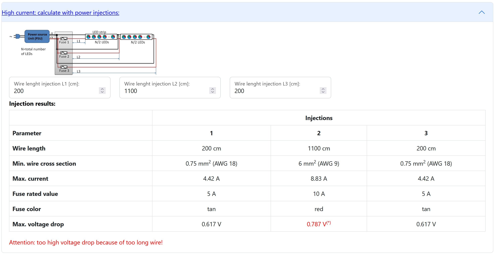
It is noticeable that a very thick cable is needed for the middle injection in order to keep the voltage drop small. But it still exceeds 700mV. We therefore decide to place another power supply in the opposite corner of the room. This means that each power supply only supplies half of the LED strip, 4.5 meters in each direction:
This means that each power supply supplies 9 meters of LED strip: 2160 LEDs must be entered into the calculator for each power supply:
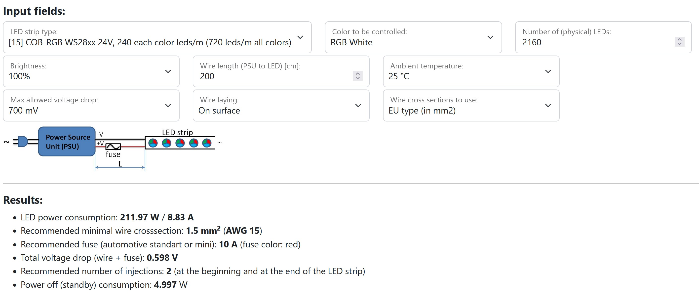
The cable from the power supply to the LED strip must have cross section 1.5 mm2 and be protected with a 10 A fuse. The calculator suggests two power injections, once at the beginning and once at the end of the LED strip. However, our situation is different in that we supply two pieces of LED strips from one power supply, but the power consumption is the same. Therefore, you can use directly the specifications from the calculator regarding injections:
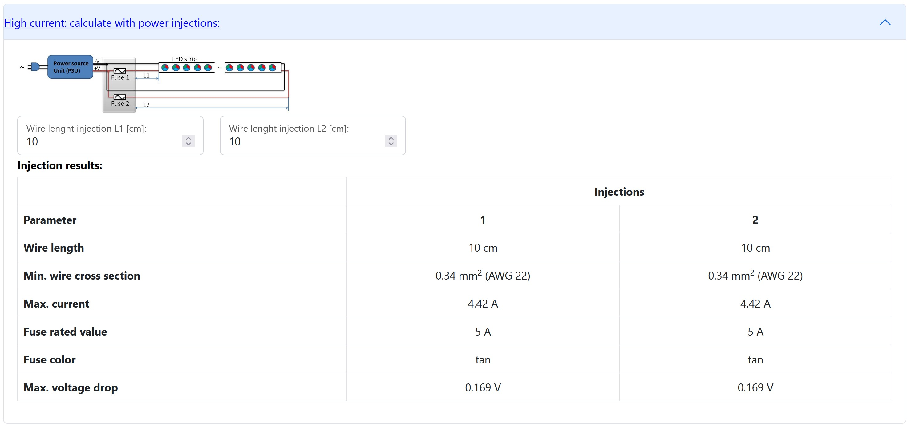
So each power injection is implemented short, must be at least 0.34 mm2 and is protected with a 5 A fuse:
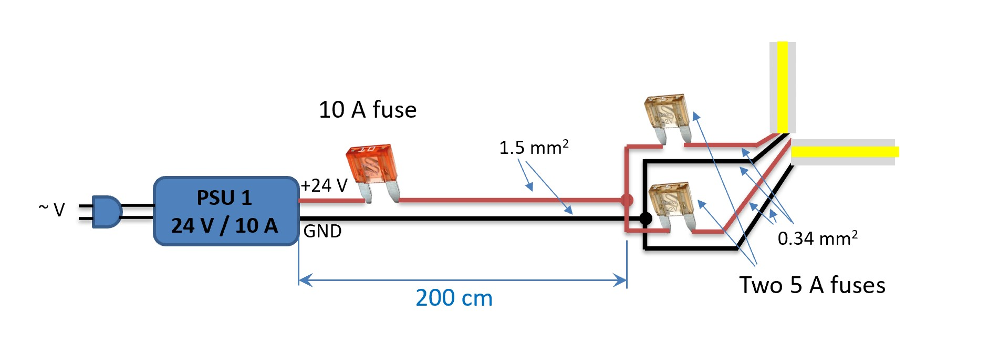
Four issues can be additionally discussed:
- The 24 V cable on the LED strip must be cut through at the red points. This ensures that no current can flow from one power supply to the other in order to ensure their trouble-free and safe operation.
- The total standby power consumption is approx. 10 watts (see calculator results). Therefore, you should use relays to save electricity and protect the environment.
- The number of “equivalent” physical RGB LEDs is 4320 as calculated above. Since 24 V strips usually have 6 of them in a logical group, the number of logical LEDs is 720. These can all be controlled by a single WLED controller; in the WLED software you specify the number of LEDs as 720.
- The power distribution can be done directly on each power supply, then 4 lines go up from each power supply, i.e. +24V and GND for each 4.5 m LED section (1080 LEDs). For each segment you can calculate this using the calculator as follows:
The whole thing can then be implemented, for example, with a controller, two 24 V relay boards and 4x 5A fuses from MyHome-Control as follows:
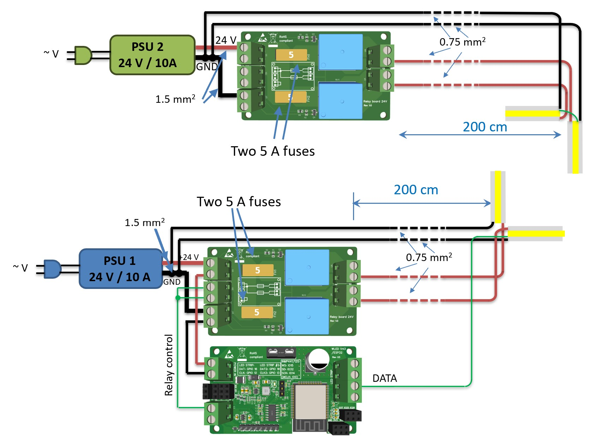